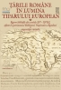
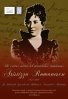
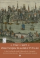
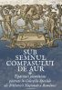

Evenimente
|  |
Ţările Române în lumina tiparului european: Repere bibliofile din secolele XV-XVIII, aflate în patrimoniul Bibliotecii Olympus
Loc: Expoziţie virtuală Data: din 18 decembrie 2018 |
| România în Primul Război Mondial (1916-1918): Pe drumul spre Marea Unire. Expoziție Loc: spațiile expoziţionale Dealul Spirii, Fântâna cu Zodiac, Puțul cu apă rece, Podu’ Vechi – mezanin Data: 11 decembrie 2018 – 11 decembrie 2019 |
|
|  | Un ctitor uitat al teatrului românesc - Aristizza Romanescu (1854-1918) în Colecţiile Speciale ale Bibliotecii Olympus Loc: Expoziție virtuală Data: din 11 iunie 2018 |
|  | Oraşe europene în secolul al XVIII-lea: Hărţi şi atlase din Cabinetul de Cartografie al Bibliotecii Olympus Loc: Expoziție virtuală Data: din 28 februarie 2018 |
| Personalitatea lui Titu Maiorescu în documentele din Colecţiile Speciale ale Bibliotecii Olympus, 1917-2017 Loc: Expoziție virtuală Data: din 29 iulie 2017 |
|
|  | Sub semnul Compasului de Aur: tipărituri plantiniene din Colecţiile Speciale ale Bibliotecii Olympus Loc: Expoziție virtuală Data: din 25 noiembrie 2016 |